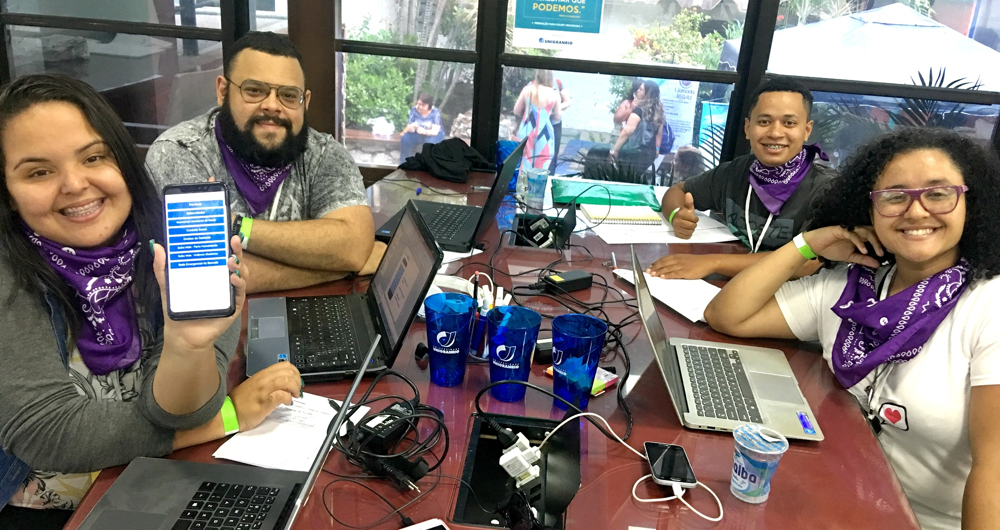
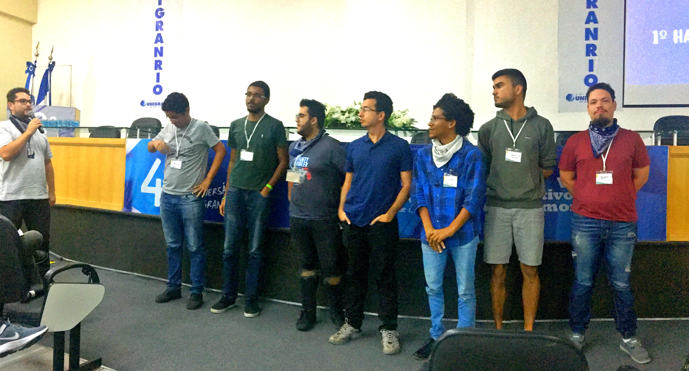

Sobre
A Universidade do Grande Rio - UNIGRANRIO, lança o
2° Hackathon Unigranrio - Unigranrio.
Trata-se de uma maratona de programação multidisciplinar e
colaborativa, onde grupos competem entre si desenvolvendo
projetos que possam fornecer melhorias significativas ou
solucionem problemas pertinentes ao tema proposto, por meio
da aplicação eficiente e inteligente das tendências tecnológicas
disponíveis, em um tempo de trabalho limitado de 24 horas.




Disposições Gerais
Participação
Qualquer pessoa acima de 18 anos pode participar, desde
que alocada em uma das categorias dispostas neste regulamento.
No entanto, os participantes devem estar atentos às seguintes
concessões:
-
Permitido: será permitido a utilização de
frameworks de desenvolvimento, simuladores ou ambientes virtuais
de prototipagem, que facilitam o processo de trabalho.
-
Não permitido: os participantes não podem
concorrer com soluções que já estejam em fase avançada de
desenvolvimento e, da mesma forma, não podem estar prototipadas
em qualquer nível.
Categorias
Qualquer pessoa acima de 18 anos pode participar, desde que
alocada em uma das categorias dispostas neste regulamento.
No entanto, os participantes devem estar atentos às seguintes
concessões:
| Categoria |
Descrição |
| Alunos de graduação Unigranrio |
Alunos regularmente matriculados em cursos de graduação
da Unigranrio
|
| Alunos de graduação visitantes |
Alunos de outras instituições de ensino de nível superior,
regularmente matriculados. Visitantes (Apresentar declaração
ou carteirinha da instituição.)
|
| Alunos de pós-graduação |
Estudantes cursando pós-graduação relacionada à área de
tecnologia.
|
Etapas e Calendário
Este evento contará com 4 (quatro) etapas distintas, cada uma contendo
suas respectivas atividades e calendário, conforme o quadro abaixo.
| Etapas |
Atividades |
Início |
Fim |
Etapas de
inscrição
|
Etapa 1 |
Divulgação do tema. |
08/04/2019 |
| Etapa 2 |
Cadastro de equipe e sua ideia de projeto. |
08/04/2019 |
21/04/2019 |
Etapa de
Seleção
|
Etapa 3 |
Seleção das ideias. |
22/04/2019 |
23/04/2019 |
| Divulgação das equipes e ideias selecionadas. |
24/04/2019 |
Etapa
Presencial
|
Etapa 4 |
Credenciamento. |
26/04/2019
as 17:30h
|
| Desenvolvimento e prototipagem da solução. |
26/04/2019
as 19:30h
|
27/04/2019
às 20h
|